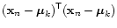
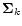
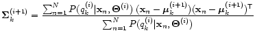

Subsections
Unsupervised training
In the previous section, we have computed the models for classes /a/,
/e/, /i/, /o/, and /y/ by knowing a-priori which training samples
belongs to which class (we were disposing of a labeling of the
training data). Hence, we have performed a supervised training
of the Gaussian models. Now, suppose that we only have unlabeled
training data that we want to separate in several classes (e.g., 5
classes) without knowing a-priori which point belongs to which class.
This is called unsupervised training. Several algorithms are
available for that purpose, among them: the -means, the EM
(Expectation-Maximization), and the Viterbi-EM algorithm.
All these algorithms are characterized by the following components:
- a set of models for the classes
 (not necessarily
Gaussian), defined by a parameter set
(means, variances,
priors,...);
(not necessarily
Gaussian), defined by a parameter set
(means, variances,
priors,...);
- a measure of membership, telling to which extent a data point
``belongs'' to a model;
- a ``recipe'' to update the model parameters as a function of the
membership information.
The measure of membership usually takes the form of a distance measure
or the form of a measure of probability. It replaces the missing
labeling information to permit the application of standard parameter
estimation techniques. It also defines implicitly a global criterion
of ``goodness of fit'' of the models to the data, e.g.:
- in the case of a distance measure, the models that are closer to
the data characterize it better;
- in the case of a probability measure, the models with a larger
likelihood for the data explain it better.
- Start with initial prototypes
 ,
.
,
.
- Do:
- For each data-point
,
, compute the squared
Euclidean distance from the
prototype:
|
 |
|
|
| |
|
 |
|
- Assign each data-point
to its closest prototype
, i.e., assign
to the class if
Note: using the squared Euclidean distance for the
classification gives the same result as using the true Euclidean
distance, since the square root is a monotonically growing
function. But the computational load is obviously smaller when the
square root is dropped.
- Replace each prototype with the mean of the data-points assigned to
the corresponding class;
- Go to 1.
- Until: no further change occurs.
The global criterion for the present case is
and represents the total squared distance between the data and the models
they belong to. This criterion is locally minimized by the algorithm.
Use the -means explorer utility:
KMEANS K-means algorithm exploration tool
Launch it with KMEANS(DATA,NCLUST) where DATA is the matrix
of observations (one observation per row) and NCLUST is the
desired number of clusters.
The clusters are initialized with a heuristic that spreads
them randomly around mean(DATA) with standard deviation
sqrtm(cov(DATA)).
If you want to set your own initial clusters, use
KMEANS(DATA,MEANS) where MEANS is a cell array containing
NCLUST initial mean vectors.
Example: for two clusters
means{1} = [1 2]; means{2} = [3 4];
kmeans(data,means);
Launch kmeans with the data sample allvow, which was part
of file vowels.mat and gathers all the simulated vowels data. Do
several runs with different cases of initialization of the algorithm:
- 5 initial clusters determined according to the default heuristic;
- initial MEANS values equal to some data points;
- initial MEANS values equal to
.
Iterate the algorithm until its convergence. Observe the evolution of the
cluster centers, of the data-points attribution chart and of the total
squared Euclidean distance. (It is possible to zoom these plots: left
click inside the axes to zoom centered on the point under the
mouse; right click to zoom out; click and drag to zoom into an area; double
click to reset the figure to the original). Observe the mean values found after the convergence of the algorithm.
» kmeans(allvow,5);
- or -
» means = { mu_a, mu_e, mu_i, mu_o, mu_y };
» kmeans(allvow,means);
Enlarge the window, then push the buttons, zoom etc.
After the convergence, use:
» for k=1:5, disp(kmeans_result_means{k}); end
to see the resulting means.
- Does the final solution depend on the initialization of the
algorithm?
- Describe the evolution of the total squared Euclidean distance.
- What is the nature of the discriminant surfaces corresponding to
a minimum Euclidean distance classification scheme?
- Is the algorithm suitable for fitting Gaussian clusters?
- Start from initial Gaussian models
, characterized by the set of parameters
(i.e., the
set of all means and variances
and
,
). Set
the initial prior probabilities
 to .
to .
- Do:
- Classify each data-point using Bayes' rule.
This step is equivalent to having a set of boolean hidden variables
that give a labeling of the data by taking the value 1 (belongs) or 0 (does
not belong) for each class and each point
. The value of
that maximizes
precisely tells which is the most probable
model for each point of the whole set  of training data.
of training data.
Hence, each data point
is assigned to its most probable
cluster .
- Update the parameters ( is the iteration index):
- update the means:
mean of the points belonging to

- update the variances:
variance of the points belonging to
- update the priors:
- Go to 1.
- Until: no further change occurs.
The global criterion in the present case is
and represents the joint likelihood of the data with respect to the models
they belong to. This criterion is locally maximized by the algorithm.
Use the Viterbi-EM explorer utility:
VITERB Viterbi version of the EM algorithm
Launch it with VITERB(DATA,NCLUST) where DATA is the matrix
of observations (one observation per row) and NCLUST is the
desired number of clusters.
The clusters are initialized with a heuristic that spreads
them randomly around mean(DATA) with standard deviation
sqrtm(cov(DATA)). Their initial covariance is set to cov(DATA).
If you want to set your own initial clusters, use
VITERB(DATA,MEANS,VARS) where MEANS and VARS are cell arrays
containing respectively NCLUST initial mean vectors and NCLUST
initial covariance matrices. In this case, the initial a-priori
probabilities are set equal to 1/NCLUST.
To set your own initial priors, use VITERB(DATA,MEANS,VARS,PRIORS)
where PRIORS is a vector containing NCLUST a priori probabilities.
Example: for two clusters
means{1} = [1 2]; means{2} = [3 4];
vars{1} = [2 0;0 2]; vars{2} = [1 0;0 1];
viterb(data,means,vars);
Launch viterb with the dataset allvow. Do several runs
with different initializations of the algorithm:
- 5 initial clusters determined according to the default heuristic;
- initial MEANS values equal to some data points, and some
random VARS values (try for instance cov(allvow) for all
the classes);
- the initial MEANS, VARS and PRIORS values
found by the -means algorithm.
- initial MEANS values equal to
, VARS values equal to
, and PRIORS values
equal to
;
- initial MEANS and VARS values chosen by yourself.
Iterate the algorithm until it converges. Observe the evolution of the
clusters, of the data points attribution chart and of the total
likelihood curve. Observe the mean, variance and priors values found
after the convergence of the algorithm. Compare them with the values
computed in section 2.2 (using supervised training).
» viterb(allvow,5);
- or -
» means = { mu_a, mu_e, mu_i, mu_o, mu_y };
» vars = { sigma_a, sigma_e, sigma_i, sigma_o, sigma_y };
» viterb(allvow,means,vars);
Enlarge the window, then push the buttons, zoom, etc.
After convergence, use:
» for k=1:5, disp(viterb_result_means{k}); end
» for k=1:5, disp(viterb_result_vars{k}); end
» for k=1:5, disp(viterb_result_priors(k)); end
to see the resulting means, variances and priors.
- Does the final solution depend on the initialization of the
algorithm?
- Describe the evolution of the total likelihood. Is it monotonic?
- In terms of optimization of the likelihood, what does the final
solution correspond to?
- What is the nature of the discriminant surfaces corresponding to the
Gaussian classification?
- Is the algorithm suitable for fitting Gaussian clusters?
- Start from K initial Gaussian models
, with equal priors set to
.
- Do:
- Estimation step: compute the probability
for each data point
to belong
to the class
 :
:
This step is equivalent to having a set of continuous hidden
variables, taking values in the interval , that give a labeling
of the data by telling to which extent a point
belongs to the
class . This represents a soft classification, since a point can
belong, e.g., by 60% to class 1 and by 40% to class 2 (think of
Schrödinger's cat which is 60% alive and 40% dead as long as
nobody opens the box or performs Bayesian classification).
- Maximization step:
- update the means:
- update the variances:

- update the priors:
In the present case, all the data points participate to the update of all
the models, but their participation is weighted by the value of
.
- Go to 1.
- Until: the total likelihood increase for the training data
falls under some desired threshold.
The global criterion in the present case is the joint likelihood of
all data with respect to all the models:
|
|
|
| |
 (Bayes) (Bayes) |
|
| |
|
|
Applying Jensen's inequality
,
we obtain:
Hence, the criterion
represents a lower boundary for
 . This criterion is locally maximized by the algorithm.
. This criterion is locally maximized by the algorithm.
Use the EM explorer utility:
EMALGO EM algorithm explorer
Launch it with EMALGO(DATA,NCLUST) where DATA is the matrix
of observations (one observation per row) and NCLUST is the
desired number of clusters.
The clusters are initialized with a heuristic that spreads
them randomly around mean(DATA) with standard deviation
sqrtm(cov(DATA)*10). Their initial covariance is set to cov(DATA).
If you want to set your own initial clusters, use
EMALGO(DATA,MEANS,VARS) where MEANS and VARS are cell arrays
containing respectively NCLUST initial mean vectors and NCLUST
initial covariance matrices. In this case, the initial a-priori
probabilities are set equal to 1/NCLUST.
To set your own initial priors, use VITERB(DATA,MEANS,VARS,PRIORS)
where PRIORS is a vector containing NCLUST a priori probabilities.
Example: for two clusters
means{1} = [1 2]; means{2} = [3 4];
vars{1} = [2 0;0 2]; vars{2} = [1 0;0 1];
emalgo(data,means,vars);
Launch emalgo with again the same dataset allvow. Do
several runs with different cases of initialization of the algorithm:
- 5 clusters determined according to the default heuristic;
- initial MEANS values equal to some data points, and some
random VARS values (e.g., cov(allvow) for all the
classes);
- the initial MEANS and VARS values found by the
-means algorithm.
- initial MEANS values equal to
, VARS values equal to
, and PRIORS values
equal to
;
- initial MEANS and VARS values chosen by yourself.
(If you have time, also increase the number of clusters and play again with
the algorithm.)
Iterate the algorithm until the total likelihood reaches an asymptotic
convergence. Observe the evolution of the clusters and of the total
likelihood curve. (In the EM case, the data points attribution chart is not
given because each data point participates to the update of each cluster.)
Observe the mean, variance and prior values found after the convergence of
the algorithm. Compare them with the values found in
section 2.2.
» emalgo(allvow,5);
- or -
» means = { mu_a, mu_e, mu_i, mu_o, mu_y };
» vars = { sigma_a, sigma_e, sigma_i, sigma_o, sigma_y };
» emalgo(allvow,means,vars);
Enlarge the window, then push the buttons, zoom etc.
After convergence, use:
» for k=1:5; disp(emalgo_result_means{k}); end
» for k=1:5; disp(emalgo_result_vars{k}); end
» for k=1:5; disp(emalgo_result_priors(k)); end
to see the resulting means, variances and priors.
- Does the final solution depend on the initialization of the
algorithm?
- Describe the evolution of the total likelihood. Is it monotonic?
- In terms of optimization of the likelihood, what does the final
solution correspond to?
- Is the algorithm suitable for fitting Gaussian clusters?
- With the -means algorithm the solution is independent
upon the initialization.
- With the -means algorithm the discriminant surfaces are
linear.
- The -means algorithm is well suited for fitting
Gaussian clusters
- In the -means algorithm the global criterion used to
minimize is the maximum likelihood.
- In all 3 algorithms the measure used as global criterion
decreases in a monotonic way.
- In the Viterbi-EM and EM algorithm the solution is
highly dependent upon initialization.
- The EM algorithm is best suited for fitting Gaussian
clusters.
- It is an easy task to guess the parameters for
initialization.
- With the Viterbi-EM algorithm the discriminant surfaces
are linear.
- With the EM algorithm the discriminant surfaces have the
form of (hyper)parabola.
- The EM algorithm needs less computational effort then
the Viterbi-EM algorithm.
- In the EM algorithm and the Viterbi-EM algorithm, the
same global criterion is used.
- The EM algorithm finds a global optimum.